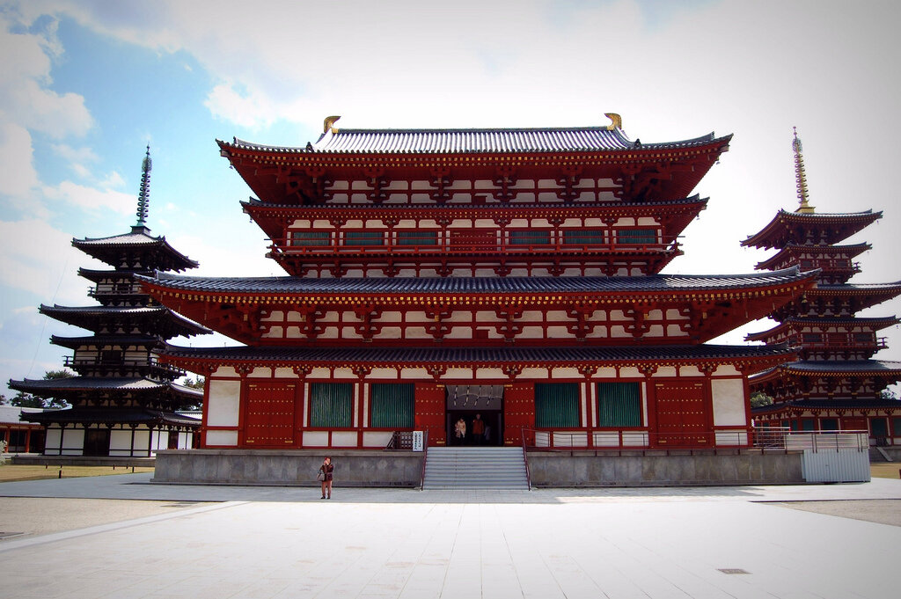

Храм Якусі-дзі (яп. 薬師寺 Якусі-дзі) - один з найдавніших храмів Японії сьомого століття,
видатний об'єкт всесвітньої спадщини ЮНЕСКО і "Історичний Пам'ятник стародавньої Нари".

- У храмі строго симетричне планування з головними та лекційними залами, що стоять на центральній
осі, між двома пагодами. Головний зал був відновлений в 1970-х роках, будучи зруйнованим
пожежею, і
розміщує трійцю божеств Якусі, шедевр японського буддистського мистецтва. Східна пагода - єдина
споруда храму, яка пережила вогонь датується 730 року.
- Сьогодні це головний храм найдавнішої школи японського буддизму Хоссо. Головне божество, якому
тут поклоняються Якусі Нерай, відомий як "Будда Медицини", одне з перших буддійських Божества,
вчення про яку прийшло з Китаю до Японії в 680-ому році. Буддисти всього світу впевнені, що якщо
з
вірою доторкнутися до його зображенню, то можна зцілитися від будь-якої недуги як духовного так
і фізичного. Божество, висотою 250 сантиметрів, сидить на домашньому вівтарі здоров'я замість
традиційної квітки лотоса і є Національним Скарбом країни.
-
Якусі-дзі цікавий і тим, що це перший храм того часу, у якого були Східні й Західні пагоди. На
сьогоднішній день Східна пагода є єдиною оригінальною структурою 8-го століття 730 року, періоду
Нари, дивом пережила пожежу, яка знищила Храмовий комплекс в 1528 року пагода досягає 34 метрів і є
однією з найпрекрасніших в Японії, яскравий представник архітектури Хакухо періоду Тенпё
(710-784 років). Східна пагода має всього три яруси, але бачиться шість через присутність доданих
крил
даху Мокоші, стиль рідкісний в архітектурі звучить як "Застигла музика" через вишуканої форми.
Східна пагода була двічі на реконструкції в 1898-1900 роках та в 2012 році.
У храмі розміщується прекрасна колекція буддистських предметів мистецтва, включаючи Триаду Якусі,
Каннон і витончений живопис 8-го століття Кічідзо, яка є Національним Скарбом і виставляється тільки
з 1-15 січня і з 8 жовтня до 10 листопада. Kічідзо є буддистською богинею миру, щастя і краси.